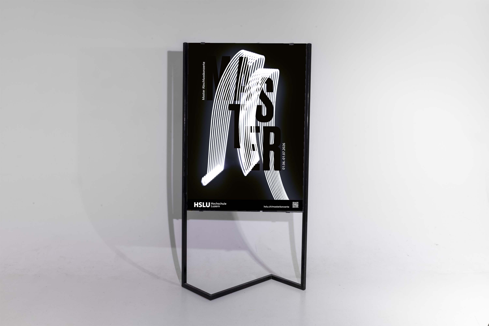

Typografie; Fotografie
Hochschule Luzern
2025
VISUELLE KLANGWELTEN
Wie man Musik visuell darstellt, ist eine offene Frage, die ganz unterschiedlich beantwortet werden kann. In diesem Plakat wurden die Klang und Rhythmus mit Licht und schwungvollen Bewegungen interpretiert. Entstanden ist eine Mischung aus analoger und digitaler Gestaltung: Eine Fotografie mit Langzeitbelichtung in die die Typografie digital verwoben wurde. Das Plakat soll den Blick des Betrachters einfangen und dabei dennoch elegant und vergänglich wirken.
